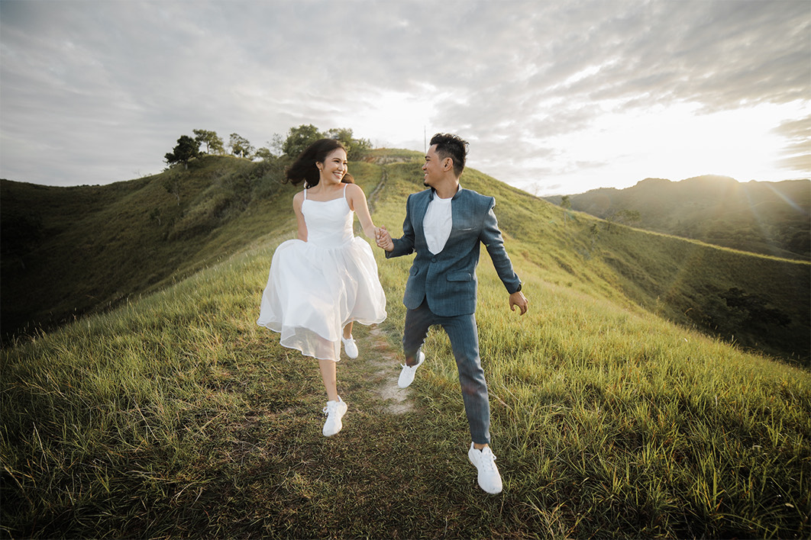
 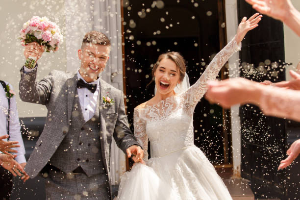
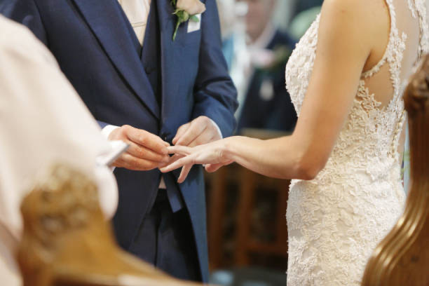
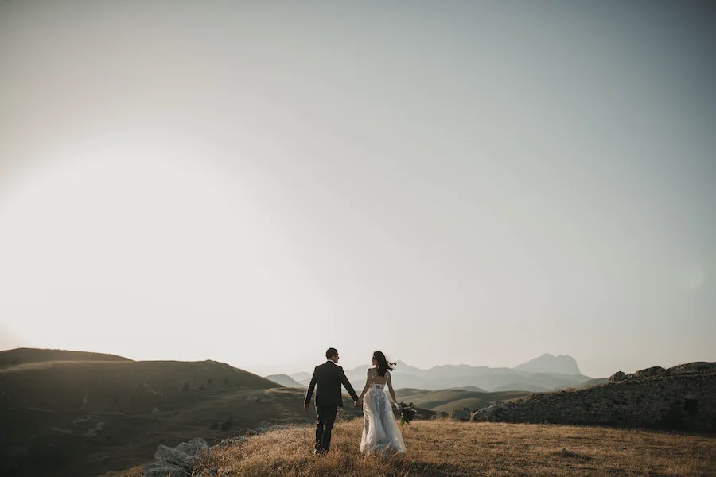
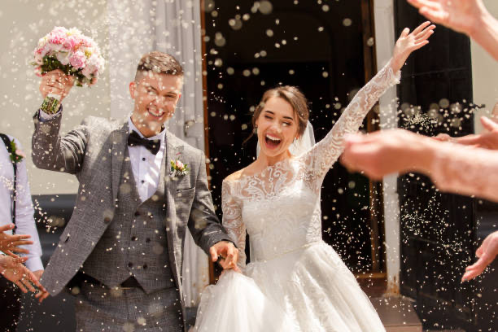
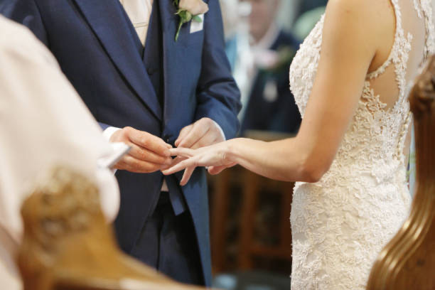
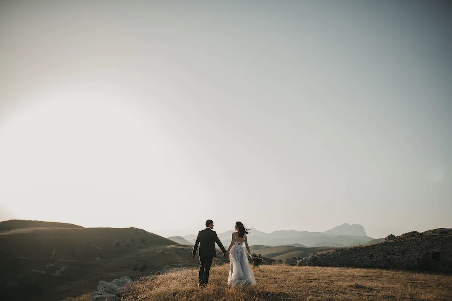
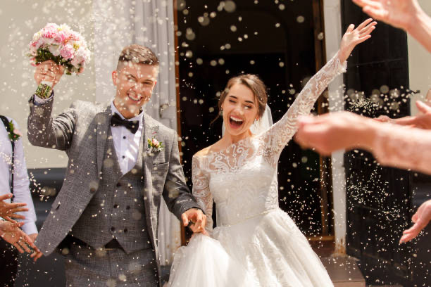
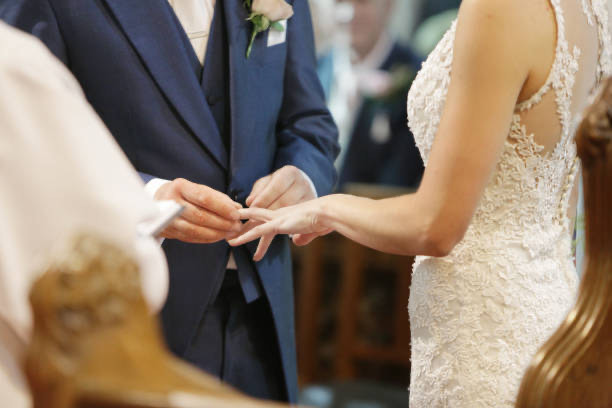
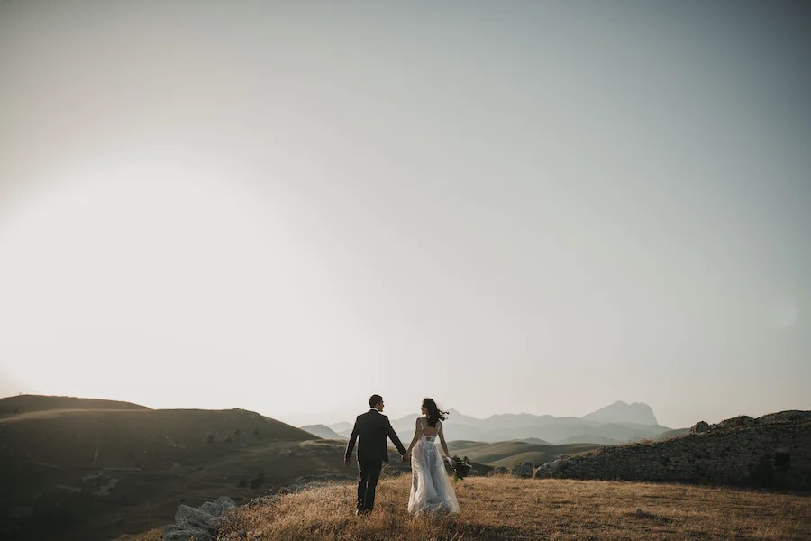
We make special moments ever lastings.
We, The Producers , we are passionate storytellers who believe in the magic of love and the power of imagery. With years of experience, our team of skilled photographers and creatives is committed to encapsulating the essence of your wedding day. We understand that your wedding is not just an event; it's a celebration of love, unity, and the start of a beautiful journey. Our approach is rooted in building a genuine connection with our clients. We take the time to understand your vision, preferences, and personalities, ensuring that every photograph reflects your unique story. From intimate elopements to grand celebrations, we embrace the diversity of love and cater our services to match your style. We thrive on the details, capturing the delicate intricacies that make your wedding day truly yours. Our unobtrusive presence allows us to document the raw emotions and fleeting moments that often go unnoticed. The result is a collection of images that will transport you back to the emotions and joy of your special day, allowing you to relive those cherished memories time and time again. Join us in preserving the magic of your wedding through the art of photography. Let us be a part of your journey, capturing the love, laughter, and tears that make your story uniquely beautiful.
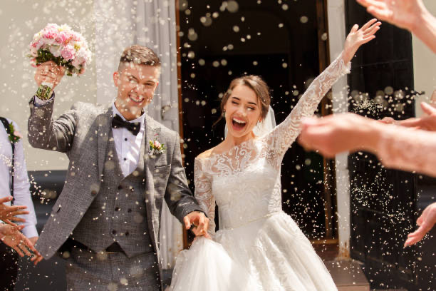
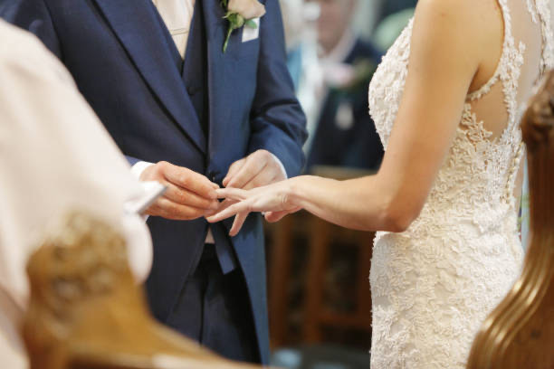
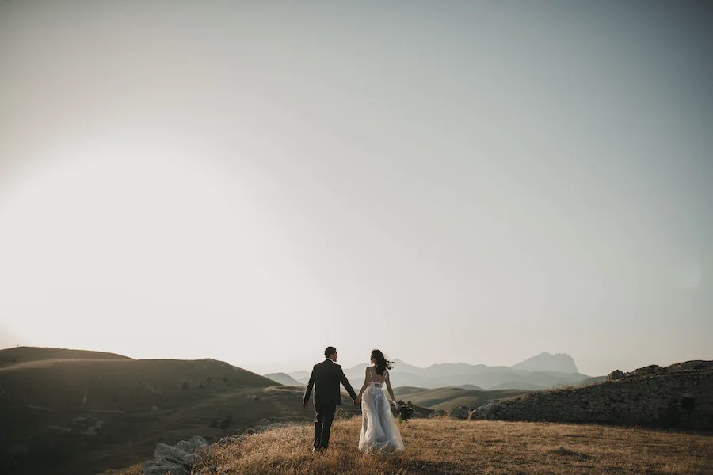